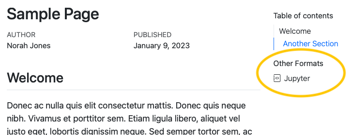

We are happy to announce that Quarto 1.3 has been released. You can grab the current release from https://quarto.org/docs/download/.
If you are ever wondering which version of Quarto you are using, a quick way to check on the command line is:
Terminal
quarto --versionWe’ve previously blogged about some of the features of this release that we were most excited about, but let’s highlight them again.
Code Annotation
You can now add line-based annotations to your code blocks using special code comments along with an ordered list. Code annotations work across many formats, and are interactive in HTML-based formats.

To learn more, check out the Code Annotation documentation.
Multi-format Publishing
HTML pages (either standalone or in a website) now automatically include links to other formats specified in the document front matter. For example, the following document front matter:
title: Sample Page
author: Norah Jones
date: last-modified
toc: true
format:
html: default
ipynb: defaultResults in an HTML page that includes a link to the additional notebook format in the right margin below the table of contents:

Find out more in the documentation on Including Other Formats.
Jupyter Cell Embedding
Easily include the output of an external Jupyter notebook in a Quarto document with the embed shortcode. Provide the path to a Jupyter Notebook and a cell identifier and the output will be included in your document along with a link back to the source Notebook.

Learn more about the embed shortcode in Embedding Jupyter Notebook Cells in the docs.
Confluence Publishing
Atlassian Confluence is a publishing platform for supporting team collaboration. Quarto now provides support for publishing individual documents, as well as projects composed of multiple documents, into Confluence Spaces.


To learn more, head to the documentation on Confluence Publishing.
Other Highlights
Some other notable highlights include:
Article Grid Customization—Customize the widths of layout components in HTML documents
Quarto Book AsciiDoc Support—Output Quarto books to AsciiDoc files
Website Navigation Improvements—Include tools in your navbar, and provide better navigation for Quarto websites on mobile devices
Mermaid Diagram Theming—Use your document theme, or built-in Mermaid themes, for your Mermaid diagrams
PDF: SVG and Remote Images—Include SVG images and remote images in PDF documents
kbdShortcode—Show well-formatted keyboard shortcuts in Quarto documents.
You can find all the other changes in 1.3, in the Release Notes.
Acknowledgements
We’d like to say a huge thank you to everyone who contributed to this release by opening issues and pull requests:
ABohynDOE, aborruso, agerlach, aimundo, alperyilmaz, ameliaritger, anaveenan, andrewheiss, apreshill, apsteinmetz, arnaudgallou, aronatkins, arronlacey, ArturKlauser, astrowonk, ats, awehrfritz, b-rodrigues, baptiste, batpigandme, bayeslearner, benabel, BertTijhuis, boshek, brunomioto, busemorose, bvancil, bwelman, cboettig, cgoo4, ChoCho66, cicarrascog, coatless, code86, condwanaland, daniel-smit-haw, daranzolin, davidbudzynski, DavidD003, ddobrinskiy, dgkf, DhruvaSambrani, directknowledge, dkubek, dmalan, dmenne, drcaprosser, drscotthawley, edoson, eeholmes, eitsupi, elgabbas, EllaKaye, emmansh, ericvmai, espinielli, etiennebacher, EvoArt, fire, fortunewalla, freestatman, fuhrmanator, fulem, g-simmons, gadenbuie, GegznaV, ghost, giabaio, githubpsyche, GraceEMc, gregswinehart, GShotwell, guoruizhong, harrelfe, hemonika, henningsway, iandol, ijlyttle, iusgit, ivanek, jake-wittman, jakobarendt, jakub-jedrusiak, javajon, jcmkk3, jcolomb, jdutant, JeffreyRacine, jensschroer, jeremiahpslewis, jfbarthelemy, jhelvy, Jiayou-Chao, jimjam-slam, jkylearmstrong, jmbarbone, jmbuhr, jmcastagnetto, joelvonrotz, JoFrhwld, johannes4998, jrcuesta, jthomasmock, juba, justanothergithubber, KaiWaldrant, kalenkovich, kdheepak, kelly-sovacool, KittJonathan, kmasiello, knuesel, koehlerson, koushikkhan, lcnbr, leovan, linogaliana, m-legrand, m4jing, machow, maelle, malcolmbarrett, marierivers, MattF-NSIDC, mattsams89, mattwarkentin, maxdrohde, mccarthy-m-g, MHellmund, mikheyev, mine-cetinkaya-rundel, mksinicus, mrajeev08, nanxstats, NeubertJonas, nikcleju, njbart, patrickvdb, petrbouchal, philip-khor, philwunderlich, Pierre9344, pitmonticone, pmagwene, poldrack, pommevilla, psychelzh, ratnanil, ravimakhija, RaymondBalise, reuning, rexdouglass, rgaiacs, richardsprague, rjake, rleyvasal, rmcd1024, RobTour, rsenft1, runlevel0, sagikazarmark, salim-b, SamEdwardes, samperman, schochastics, ScientiaFelis, scottamain, scottfranz, sebastian-c, seeM, shafayetShafee, singuyenmai, sje30, snhansen, streepvaren, thedabs91, thomashallam, timothee-bacri, tomshafer, tomsutch, tomvaneyck, topepo, tverbeiren, TylerHillery, ucpresearch, verbalins, vfacta, vlyubchich, VMTdeJong, vpratz, white-c, wklimowicz, XiangyunHuang, Xitian9, xl0, xtimbeau, y9c, yevgenryeznik, zachcp, zkwabm